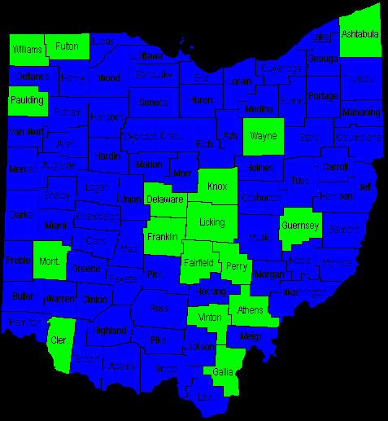

Ghost Towns of Ohio
In this section we attempt to catalogue and explore the many ghost towns which dot the landscape of the Buckeye State. Although the western states are best known for their ghost towns, they exist all over the country--towns that, for whatever reason, simply ceased to exist. Most dried up because the major industry disappeared--a mine went bust, or the stagecoaches stopped running, or the railroad decided to move its line two miles north. Others were absorbed by bigger cities; Columbus alone sprawls across as many as 150 smaller hamlets, some of which retain part of their identity, while others are marked only by a street name, a cemetery, or a word on an old county map. The classic broken-window, banging-shutter ghost town of Old West lore isn't to be found very often in a state like Ohio, which is too densely populated and experiences a variety of seasons too extreme to allow an empty town to remain for very long. Some are flattened beneath interstates; others are submerged beneath lakes in state parks. But if you know what you're looking for, you can unearth the remains of forgotten villages no one has called home for many long years.
In addition, towns are profiled on this page which occupy other weird planes of existence--fictitious places, real towns with strange histories or appearances, burgs which were once home to many, many more people than they are today. Click on one of the green counties on the map below to be taken to an alphabetical listing and survey of that county's ghost towns.

If you'd like to read about one of the specific Ohio ghost towns I have visited and/or researched more fully, click on one of the places listed below.
Much of my information comes from the Center for Ghost Town Research in Ohio, located just north of Columbus in Sunbury. Richard Helwig and his son regularly publish books on the ghost towns of various counties around the state. Here I discuss ghost towns in Ohio but it's important to note that they exist all around the world and if it's within your personal budget it may be worth seeing them for yourself. Thanks largely to the information the Helwigs have gathered, I've begun compiling lists and brief descriptions of the ghost towns of different counties. These pages will multiply and expand as I learn more about the forgotten towns in each Ohio county. I've omitted many of what Helwig calls "semi-ghost towns," which he defines as towns where less than ten percent of the original population remains, and focused instead on the towns which are truly gone--leaving only memories, or, in a few lucky cases, a part of what once made up the town. I've also taken information from other sources, and fleshed out these by-county listings as more information comes in. An excellent place to look if you're trying to find a town that doesn't exist anymore is DeLorme's Ohio Atlas and Gazetteer, which I mention in the Recommended Reading department. Its large pages are dense with the tiny names of tiny towns that haven't actually been there for years, along with the standard larger villages and cities. Below are listed all of the counties for which I have ghost town lists; they're also linked from the map at the top of the page.
Home
facebook.com/andy.henderson.319
forgottenohio@yahoo.com
{kind=link}